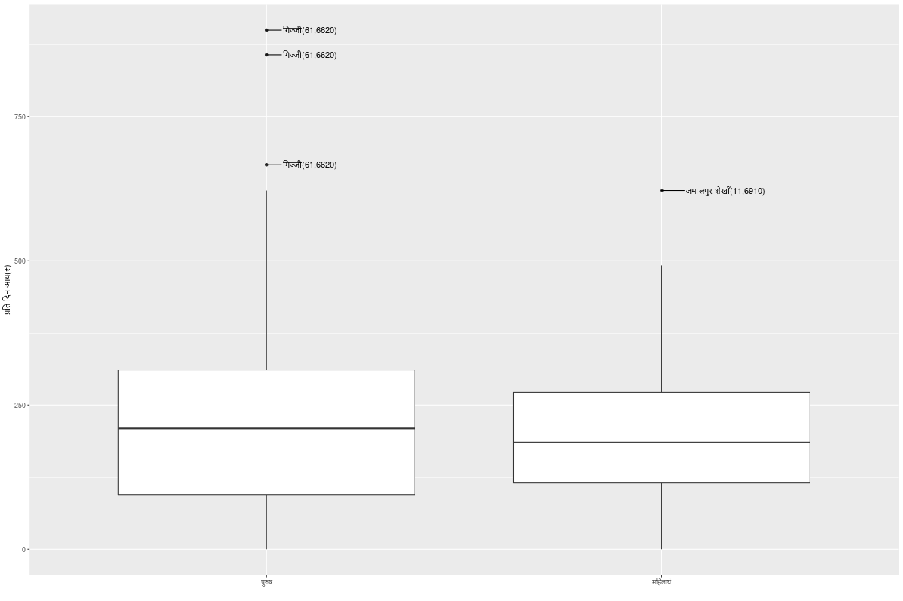

Data Entry and Analysis of Data from the Haryana Surveys
Table of Contents
- 1. Data Entry
- 2. Information for Data Users
- 3. Analysis of Data
1 Data Entry
1.1 Overall Decisions Regarding Data Entry
This section records any overall decisions that are taken.
1.2 Database Corrections Vikas
1.3 Inconsistencies in Data Sonia Jesim
1.3.1 Tests to be done
1.3.2 TODO Households for which data are missing for critical variables
This section lists data gaps that are critical. Sonia to attend to these, in consultation with Jesim, where required.
| village_name | household_number | name | sex | age |
|---|---|---|---|---|
| Cheher Kalan | 101 | Amarchand | M | 74 |
| Cheher Kalan | 101 | Chamha Devi | F | 70 |
| Cheher Kalan | 45 | Tanuj Kumar | M | 8 |
| Birdhana | 106 | Jamnadash | M | 75 |
| Jamalpur Shekhan | 55 | Raj Kumar | M | 8 |
| Jamalpur Shekhan | 14 | Sanjana | F | 9 |
| village_name | household_number | age.x | blankfield | detail |
|---|---|---|---|---|
| Birdhana | 63 | 31 | marital_status | Son |
| Birdhana | 71 | 24 | marital_status | Son |
| Birdhana | 71 | 23 | marital_status | Son |
| Birdhana | 101 | 27 | marital_status | Son |
| Cheher Kalan | 27 | 23 | marital_status | Son |
| Cheher Kalan | 27 | 14 | marital_status | Son |
| Cheher Kalan | 45 | 10 | marital_status | Granddaughter |
| Cheher Kalan | 45 | 8 | marital_status | Grandson |
| Jamalpur Shekhan | 31 | 34 | marital_status | Son |
| Jamalpur Shekhan | 37 | --- | marital_status | Mother |
| Jamalpur Shekhan | 51 | --- | marital_status | Grandson |
| Jamalpur Shekhan | 51 | --- | marital_status | Grandson |
| Jamalpur Shekhan | 51 | --- | marital_status | Grandson |
| Jamalpur Shekhan | 51 | --- | marital_status | Grandson |
| Jamalpur Shekhan | 56 | 4.5 | marital_status | Granddaughter |
| Jamalpur Shekhan | 56 | 10 | marital_status | Grandson |
| Jamalpur Shekhan | 73 | 80 | marital_status | Mother |
1.3.3 Data categorisation issues
1.3.4 Abnormal asset prices
| village_name | household_number | asset | price |
|---|---|---|---|
| Cheher Kalan | 50 | Scooter/motorcycle | 125000 |
| Cheher Kalan | 22 | Refrigerator | 20000 |
| Khandrai | 1 | Refrigerator | 25000 |
| Jamalpur Shekhan | 67 | Refrigerator | 14000 |
| Jamalpur Shekhan | 9 | Almirah/cupboard | 35000 |
1.3.5 Employment
| village_name | household_number |
|---|---|
| खंदरई | 47 |
| खंदरई | 57 |
| खंदरई | 59 |
| खंदरई | 61 |
| खंदरई | 64 |
| खंदरई | 66 |
| खंदरई | 68 |
| भिरढाणा | 8 |
| जमालपुर शेखाँ | 3 |
| जमालपुर शेखाँ | 4 |
| जमालपुर शेखाँ | 8 |
| भिरढाणा | 21 |
| भिरढाणा | 23 |
| जमालपुर शेखाँ | 11 |
| जमालपुर शेखाँ | 15 |
| भिरढाणा | 32 |
| भिरढाणा | 37 |
| जमालपुर शेखाँ | 23 |
| जमालपुर शेखाँ | 24 |
| जमालपुर शेखाँ | 26 |
| जमालपुर शेखाँ | 28 |
| जमालपुर शेखाँ | 35 |
| जमालपुर शेखाँ | 39 |
| भिरढाणा | 43 |
| भिरढाणा | 48 |
| जमालपुर शेखाँ | 40 |
| जमालपुर शेखाँ | 42 |
| जमालपुर शेखाँ | 43 |
| भिरढाणा | 64 |
| जमालपुर शेखाँ | 47 |
| भिरढाणा ढाणियाँ | 76 |
| जमालपुर शेखाँ | 60 |
| जमालपुर शेखाँ | 61 |
| जमालपुर शेखाँ | 65 |
| जमालपुर शेखाँ | 67 |
| जमालपुर शेखाँ | 72 |
| भिरढाणा ढाणियाँ | 93 |
| जमालपुर शेखाँ | 74 |
| जमालपुर शेखाँ | 75 |
| जमालपुर शेखाँ | 76 |
| जमालपुर शेखाँ | 77 |
2 Information for Data Users
2.1 Using this repo
- Please make a git branch for your work, and push it upstream when you want something merged with the master branch.
- The master branch shows up on the surveymonitor website. Vikas merges the branches into master. If needed, notify him to do so.
2.2 Sample design and multiplier
- Database Table ’ruralsurvey_sampledesign’ contains the multipliers. Merge household table with ruralsurvey_sampledesign using stratum_number field, and then merge it with any other database table to get the multipliers.
2.3 Birdhana dhanis
- For all analysis, Birdhana dhani sample (Village Birdhana, Stratum number 10) should be treated separately from Birdhana village. Since the two were sampled from different sample frames, with the total number of households in Dhanis not being known, we do not yet have a way of creating a population estimate. This needs to be discussed. For the moment, all estimates should be made separately for “Birdhana” and “Birdhana dhanis”.
*
3 Analysis of Data
This section will provide a compilation of tables and graphs on different aspects of social and economic conditions in the village.
3.1 Caste Composition
Dhanak and Chamar are the main dalit castes in Khandrai.
Cheher Kalan is a predominantly Jat village with very few households belonging to dalit and OBC castes. Jamalpur Shekhan is dominated by households belonging to dalit and OBC castes, with very few other caste Hindu households.
| सामाजिक समुदाय | खंदरई | चहड़ कलां | भिरढाणा | भिरढाणा ढाणियाँ | जमालपुर शेखाँ | गिज्जी | भादस | सभी गाँव | हरियाणा (Census, 2011) |
|---|---|---|---|---|---|---|---|---|---|
| दलित | 49 | 11.5 | 60.6 | 64.6 | 53.9 | 33.7 | 3.9 | 39.9 | 22.5 |
| मुस्लिम | 0 | 0 | 1.7 | 0 | 0 | 0 | 89.5 | 17.1 | 8.6 |
| पिछड़ी जातियाँ | 10 | 12 | 24.3 | 10.8 | 34.9 | 17.3 | 6.6 | 20.2 | --- |
| अन्य | 41.1 | 76.4 | 13.4 | 24.6 | 11.1 | 48.9 | 0 | 22.8 | --- |
3.2 Occupations
- More peasants identified among men than among women. Is it because women do not participate in farming operations? Tasks in which female labour was deployed have become mechanised/chemicalised? What are the main tasks in which women continue to work? Women routinely participate in guarding of fields and in delivering food for make workers on the farm. Delivering food on the farm is a major task that involves spending an hour or two every day. Is this accounted for anywhere? We perhaps need some case studies on this.
- More women participating in maintenance of animal resources than participating in farm operations on household operational holdings. More women participate in maintenance of animal resources than men, though participation of men is far from being negligible.
- A rather small proportion of workers are engaged in non-agricultural manual labour. In Cheher Kalan, a higher proportion of women did non-agricultural manual labour than men. What is it? CHECK.
- Proportion of receivers of pensions, scholarships and remittances is higher in Cheher Kalan than in other villages. What is the explanation? Out-migration from Cheher Kalan?
| विभिन्न प्रकार का काम | खंदरई | चहड़ कलां | भिरढाणा | भिरढाणा ढाणियाँ | जमालपुर शेखाँ | गिज्जी | भादस | |||||||
|---|---|---|---|---|---|---|---|---|---|---|---|---|---|---|
| महिला | पुरुष | महिला | पुरुष | महिला | पुरुष | महिला | पुरुष | महिला | पुरुष | महिला | पुरुष | महिला | पुरुष | |
| लैंडलॉर्ड | 0 | 0.1 | 0 | 3.7 | 0 | 0.4 | 0 | 0 | 0 | 0.1 | 0 | 0 | 0.6 | 0 |
| किसान | 13.6 | 28.4 | 23.7 | 47.5 | 12.5 | 32.6 | 32.6 | 60.4 | 8.9 | 16.2 | 23 | 34.2 | 57.1 | 57.2 |
| पशुपालन | 35.8 | 26.8 | 50.3 | 33.3 | 48.1 | 22.7 | 60.9 | 41.7 | 31.5 | 16.9 | 45.2 | 29.9 | 62.5 | 56.5 |
| खेत मज़दूरी | 15.4 | 12.9 | 13 | 23.3 | 22.6 | 16 | 13 | 16.7 | 25.8 | 18.2 | 9.9 | 6.2 | 19.4 | 9.1 |
| गैर-खेती मज़दूरी | 6.2 | 27.3 | 11.5 | 7.4 | 9.6 | 23.3 | 4.3 | 14.6 | 16 | 26.1 | 5.8 | 12.5 | 1.2 | 9.8 |
| सरकारी नौकरी | 3.7 | 4.6 | 1.1 | 8.1 | 0.9 | 2.2 | 0 | 2.1 | 1.3 | 1.8 | 1.4 | 8.4 | 1.4 | 1.6 |
| प्राईवेट नौकरी | 0.3 | 8.7 | 0 | 2.9 | 1 | 13.1 | 0 | 8.3 | 0 | 10.4 | 0.8 | 22.5 | 1.4 | 30.5 |
| निजी व्यवसाय | 4.9 | 16 | 0.5 | 5.6 | 0.9 | 21.9 | 0 | 2.1 | 6 | 21.7 | 0.9 | 10.7 | 0.2 | 15.7 |
| जातिगत काम/शिल्प | 2.2 | 1.1 | 1 | 7.7 | 5.1 | 3.3 | 0 | 0 | 4.3 | 7.5 | 0.7 | 2.8 | 0 | 3 |
| पेंशन/छात्रवृति/प्रवासी आय पर निर्भर | 15.5 | 11.4 | 19 | 28.7 | 16.6 | 8.6 | 4.3 | 14.6 | 14.5 | 9.1 | 20.9 | 16.2 | 10.2 | 4.8 |
| बेरोजगार | 1.4 | 0.6 | 0 | 8.2 | 0 | 0.1 | 0 | 0 | 0 | 0.3 | 0.2 | 3.6 | 0.1 | 2.1 |
| विद्यार्थी | 21.5 | 16.9 | 18.4 | 8 | 12.6 | 16.9 | 15.2 | 20.8 | 12.7 | 17.8 | 15.3 | 18.6 | 5.1 | 16.3 |
| घर का काम | 77.1 | 0.7 | 51.3 | 0.6 | 74.6 | 1.8 | 78.3 | 2.1 | 54.4 | 1.2 | 86.7 | 2.9 | 89.2 | 1.5 |
| बीमारी या उम्र के कारण काम नहीं कर सकते | 2.5 | 7.8 | 4.4 | 5.8 | 0.4 | 3 | 0 | 0 | 1.6 | 3.3 | 0.2 | 4.3 | 0.8 | 2 |
| अन्य | 0 | 0 | 0 | 0 | 0 | 0.4 | 0 | 0 | 0 | 0 | 0 | 0 | 0 | 0 |
| --- | 1.5 | 3.4 | 4 | 1.1 | 0.5 | 2.1 | 0 | 0 | 0.3 | 2.4 | 1 | 0.3 | 0 | 0.8 |
3.3 Land relations
3.3.1 भूमिहीनता और जमीन के वितरण में असमानता
- 57 प्रतिशत परिवारों के पास निजी खेती की जमीन नहीं है; NSS के आँकड़ों के हिसाब से यह सिर्फ़ 28 प्रतिशत है।
- सबसे बड़े 20 प्रतिशत किसानों के पास 78 प्रतिशत जमीन है; NSS के आँकड़ों के हिसाब से यह 70 प्रतिशत है।
- सबसे बड़े 20 प्रतिशत किसानों के पास जोत का 86 प्रतिशत है; NSS के आँकड़ों के हिसाब से यह 67 प्रतिशत है।
| वर्ग | जमीन के स्वामित्व में हिस्सा | कुल जोत में हिस्सा |
|---|---|---|
| सबसे कम जमीन वाले 20% परिवार | 0 | 0 |
| 20–40% | 0 | 0 |
| 40–60% | 2 | 0 |
| 60–80% | 19 | 13 |
| सबसे ज्यादा जमीन वाले 20% परिवार | 78 | 86 |
3.3.2 जमीन और जाति का सम्बन्ध
- दलित, मुस्लिम और पिछड़ी जातियों में भूमिहीनता उच्च जाति के परिवारों के मुकाबले बहुत ज्यादा है।
| जाति | भूमिहीन परिवारों का अनुपात |
|---|---|
| दलित | 83 |
| मुस्लिम | 39 |
| पिछड़ी जातियाँ | 51 |
| अन्य | 8 |
3.3.3 सिंचाई
- न केवल बड़े किसानों के पास ज्यादा जमीन है, उनके पास सबसे अच्छी जमीन है।
- उदाहरण के तौर पर, लगभग सभी गाँवों में, बड़े किसानों की जमीनों में ट्यूबवेल से सिंचित जमीन का अनुपात छोटे किसानों के मुकाबले ज्यादा है।
| वर्ग | खंदरई | चहड़ कलां | भिरढाणा | भिरढाणा ढाणियाँ | जमालपुर शेखाँ | गिज्जी | भादस |
|---|---|---|---|---|---|---|---|
| सबसे कम जमीन वाले 20% परिवार | --- | 0 | --- | --- | --- | --- | --- |
| 20–40% | --- | 51 | --- | --- | --- | 0 | 0 |
| 40–60% | 0 | 52 | 0 | 0 | --- | 82 | 55 |
| 60–80% | 90 | 74 | 99 | 72 | 0 | 94 | 67 |
| सबसे ज्यादा जमीन वाले 20% परिवार | 100 | 75 | 91 | 100 | 92 | 100 | 48 |
3.3.4 बटाई और ठेके के प्रकार
3.3.5 Burden of rent
3.4 Food security
3.5 Cropping pattern, Production, Input use
3.6 Labour Deployment
3.7 Employment
3.7.1 Casual agricultural labour
| गाँव | महिलायें | पुरुष |
|---|---|---|
| खंदरई | 20 | 20 |
| चहड़ कलां | 32 | 4 |
| भिरढाणा | 46 | 18 |
| भिरढाणा ढाणियाँ | 25 | 32 |
| जमालपुर शेखाँ | 76 | 46 |
| गिज्जी | 26 | 20 |
| भादस | 15 | 19 |

| गाँव | दलित | मुस्लिम | पिछड़ी जातियाँ | अन्य |
|---|---|---|---|---|
| खंदरई | 18687 | --- | 12196 | --- |
| चहड़ कलां | 16836 | --- | 12896 | 203 |
| भिरढाणा | 14945 | 4000 | 15810 | 10750 |
| भिरढाणा ढाणियाँ | 22500 | --- | --- | 2790 |
| जमालपुर शेखाँ | 13553 | 6109 | 6208 | --- |
| गिज्जी | 14734 | --- | 3836 | --- |
| भादस | 6800 | 4320 | 2376 | --- |
3.7.2 Long-term agricultural labour
3.7.3 Non-agricultural labour
3.8 Livestock
3.9 Housing and Sanitation
3.10 Health and Education
3.11 Assets and Indebtedness
Get unit prices
| asset | Min. | 1st Qu. | Median | Mean | 3rd Qu. | Max. | N | Total_number |
|---|---|---|---|---|---|---|---|---|
| Air-conditioner | 500 | 6625 | 12750 | 12750 | 18875 | 25000 | 2 | 23 |
| Almirah/cupboard | 4000 | 11750 | 19500 | 19500 | 27250 | 35000 | 2 | 150 |
| B/W TV | --- | --- | --- | --- | --- | --- | --- | 12 |
| Bed | --- | --- | --- | --- | --- | --- | --- | 152 |
| Bicycle | 200 | 600 | 1200 | 1989 | 1500 | 10000 | 9 | 104 |
| Biogas plant | --- | --- | --- | --- | --- | --- | --- | 4 |
| Bus | --- | --- | --- | --- | --- | --- | --- | 2 |
| Cable connection | 150 | 150 | 150 | 583 | 412.5 | 2400 | 6 | 88 |
| Capital equipment owned in non-agriculture business | --- | --- | --- | --- | --- | --- | --- | 1 |
| Car/Jeep | 40000 | 125000 | 2e+05 | 204545 | 287500 | 4e+05 | 11 | 29 |
| Ceiling fan | 600 | 612.5 | 625 | 2075 | 2812.5 | 5000 | 3 | 238 |
| Chair/stool/bench | 300 | 300 | 300 | 300 | 300 | 300 | 1 | 201 |
| Clock | 150 | 150 | 150 | 150 | 150 | 150 | 1 | 20 |
| Colour TV | 2000 | 2250 | 5000 | 8357 | 6000 | 35000 | 7 | 219 |
| Computer | 10000 | 12500 | 15000 | 15000 | 17500 | 20000 | 3 | 30 |
| Cooking gas | 500 | 1250 | 1500 | 1625 | 1875 | 3000 | 4 | 245 |
| Cooler | 750 | 2250 | 3000 | 3536 | 4250 | 8000 | 7 | 165 |
| Cot/Charpai | 400 | 475 | 550 | 844 | 918.75 | 1875 | 4 | 263 |
| DVD/VCD/CD player | 3000 | 3000 | 3000 | 3000 | 3000 | 3000 | 1 | 1 |
| Dish antenna | 1500 | 1500 | 1500 | 1500 | 1500 | 1500 | 1 | 117 |
| Dressing table | 4000 | 4000 | 4000 | 4000 | 4000 | 4000 | 1 | 55 |
| Electric heater | --- | --- | --- | --- | --- | --- | --- | 10 |
| Gas stove | --- | --- | --- | --- | --- | --- | --- | 1 |
| Generator | 10000 | 15000 | 20000 | 24000 | 25000 | 50000 | 5 | 11 |
| Handpump | --- | --- | --- | --- | --- | --- | --- | 18 |
| Inverter | 10 | 3756.5 | 8000 | 7218 | 10500 | 14000 | 7 | 153 |
| Iron | 250 | 250 | 250 | 250 | 250 | 250 | 1 | 170 |
| Kerosene stove | --- | --- | --- | --- | --- | --- | --- | 6 |
| Lorry | 8e+05 | 8e+05 | 8e+05 | 8e+05 | 8e+05 | 8e+05 | 1 | 1 |
| Microwave | --- | --- | --- | --- | --- | --- | --- | 4 |
| Mixer/grinder/Milk-churner | 1500 | 1750 | 2000 | 2000 | 2250 | 2500 | 2 | 45 |
| Mobile phone | 750 | 937.5 | 1500 | 1438 | 2000 | 2000 | 4 | 247 |
| Moped | 43000 | 43000 | 43000 | 43000 | 43000 | 43000 | 1 | 10 |
| Other | --- | --- | --- | --- | --- | --- | --- | 2 |
| Other electrical appliances | 45000 | 45000 | 45000 | 45000 | 45000 | 45000 | 1 | 4 |
| Other furniture | --- | --- | --- | --- | --- | --- | --- | 4 |
| Refrigerator | 2000 | 3500 | 6000 | 9150 | 12500 | 25000 | 10 | 194 |
| Scooter/motorcycle | 2500 | 11000 | 16000 | 23434 | 30000 | 125000 | 43 | 121 |
| Sewing machine | 800 | 1000 | 1000 | 1775 | 2550 | 4000 | 8 | 185 |
| Sofa set | 1333 | 2999.75 | 4666.5 | 4666 | 6333.25 | 8000 | 2 | 67 |
| Table | 500 | 500 | 500 | 667 | 750 | 1000 | 3 | 125 |
| Table fan | 800 | 825 | 850 | 850 | 875 | 900 | 2 | 145 |
| Telephone (fixed) | --- | --- | --- | --- | --- | --- | --- | 10 |
| Transistor/radio | 500 | 500 | 500 | 500 | 500 | 500 | 1 | 6 |
| Trunk/box/suitcase | 250 | 625 | 875 | 1500 | 1750 | 4000 | 4 | 260 |
| Utensils/kitchen instrument | --- | --- | --- | --- | --- | --- | --- | 64 |
| Washing machine | 2000 | 4000 | 5000 | 4571 | 5000 | 7000 | 7 | 128 |
| Watch | --- | --- | --- | --- | --- | --- | --- | 15 |